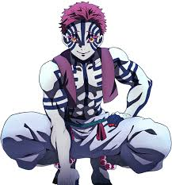

Akaza's Tinder Profile

Summary
Even if my hands have taken lives, my heart as Hakuji only ever wanted to protect the
ones I loved, and my demonic existence was a broken echo of that promise. When my memories
returned, I was consumed by the grief of my past and the regret of becoming a monster, so I
chose my own end.
Soryu Style Education
- The Soryu Style uses swift, powerful strikes from both the arms and legs to target
an opponent's vital areas and weapon.
- The philosophy of the style was that "movements should all flow
like water: always straightforward, never jagged, never struggling".
- became an expert at the technique and its applications, like the "Bell Splitter,"
which allowed me to break an opponent's sword with a precise strike.
Work Experience
Caregiver
As a caregiver, Akaza's occupation was primarily as a caretaker and nurse for the sickly daughter
of his martial arts master. As a human named Hakuji, his backstory involves two distinct periods
of caregiving:
- For his father: As a child, Hakuji repeatedly stole money to buy medicine for his severely ill
father. His physical and emotional endurance were driven by his desperation to keep his father
alive, even enduring severe beatings for his crimes.
- For Koyuki: After his father's death, Hakuji was taken in by Keizo, a martial arts master.
Hakuji was given the responsibility of looking after Keizo's chronically ill daughter, Koyuki.
It was during this period that his caregiving role evolved into a romantic relationship, with
Koyuki eventually becoming his fiancée. He dedicated his martial arts training to becoming strong
enough to protect both her and her father.
Skills (Blood Demon Art)
- Compass Needle
- Fighting Spirit Detection: This specific technique within Destructive Death allows Akaza to
sense the fighting spirit of his opponents.
- Heightened Perception: By detecting fighting spirit, he gains superior perception and can
anticipate attacks, giving him a significant advantage in combat.
- Destructive Death (Hakai Satsu)
- Shockwave Manipulation: Akaza's core ability is to generate and control destructive shockwaves
from his fists and legs, which appear as blue energy similar to his tattoos.
- Enhanced Martial Arts: He enhances his already powerful martial arts with these shockwaves, which
can be unleashed at both close and long ranges.
- Destructive Forms: The shockwaves can take on various forms, including circular energy blasts,
near-invisible air pressure, and sharp, cannon-like spikes, all designed to inflict massive damage.
Awards and Certificates
Akaza earned the rank of Upper Rank Three among the Twelve Kizuki by demonstrating immense combat prowess, loyalty,
and a relentless pursuit of strength after his transformation into a demon. His innate skill in martial arts,
combined with centuries of fighting experience and abilities like his Compass Needle for extrasensory perception,
allowed him to adapt to any opponent. Despite his refusal to consume women, which could have hindered his growth,
Akaza's sheer willpower and strength led him to become one of Muzan's most formidable and favored demons
About Me